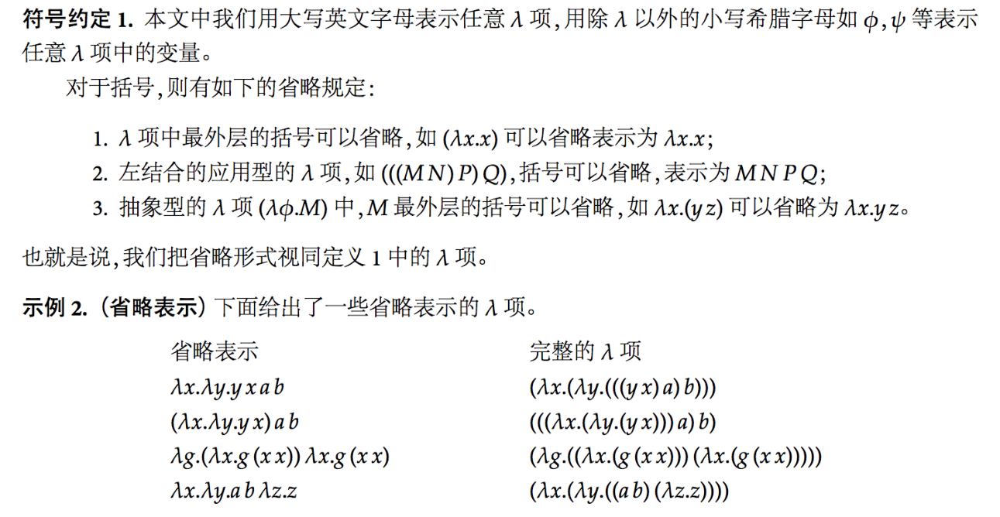
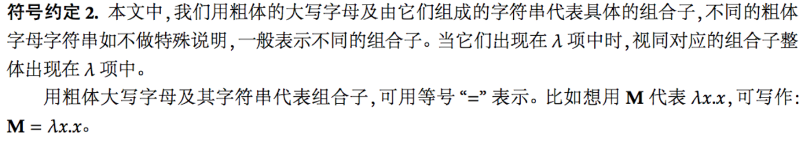

lambda演算表达式全解释
BNF范式表达上下无关文法描述
- <表达式> ::= <标识符>
- <表达式> ::= (λ<标识符>.<表达式>) 函数定义
- <表达式> ::= (<表达式><表达式>)
前面两个用于生成函数，第三条则是函数作用在参数上的形式
def1:λ项：假设我们有一个无穷的字符串集合，里面的元素被称为变量，那λ项定义如下：
- 所有的变量都是名为“原子”的λ项
- 若M,N为λ项，那么（MN)也是λ项
- 若M是一个λ项而Φ是一个变量，那么（λΦ.M）也是个λ项
我们可以更加正式的说：a. 所有变量都是λ形式（所有变量都是合法的λ表达式）; b. 如果x和y是λ形式，那么(xy)是λ形式; c. 那么(λx.y)是λ形式。通过这三条规则，我们可以写出所有的λ表达式。如果我们从左向右读λ表达式，我们可以少写一些括号：(λy.xy) ab是 (((λy.(x y)) a) b)的化简版。

自由变量
对一个λ项P，我们可以定义P中的自由变量集合FV(P)如下：
- FV(φ)={φ}
- FV{λφ.M}=FV(M){φ}
- FV(MN)=FV(M)∪FV(N)
所以可以看出抽象λφ.M中的变量φ是要除去自由变量的
α规约（置换公理）
λ xy.x+y = λab.a+b
β规约（代入公理）
（λ xy. x+y) a b = a + b
explanation:在函数后边又跟了一个表达式时，它可以被解析。解析过程就是将头部一个变量去掉，然后将它所有在体部的出现的这个变量替换成写在函数后边跟着的表达式。 也就是说，我们剪切函数后面的表达式，然后粘贴进体，替换和头部同名的那个变量；做完这一步，我们把头部的那个变量删了，因为它已经完成了它的使命，告诉我们替换哪个变量。

函数应用
函数可以被应用在表达式上。在表达式 EA 中，E 是一个函数，它被应用到了表达式 A 上。换句话来说，表达式 A 就是表达式 E 的输入，然后输出 E(A) 。
把 E 替换成抽象体 λ y.y ^2，然后得到下面的式子
EA = E(A)
EA = (λy. y²)(A)
多参数函数
用不同的方式，我们可以先定义一个函数，这个函数接收一个参数 x ，返回一个新的函数，这个新的函数接收一个参数 y ：
λx.(λy. x y)

eg: 定义I=\x.x , 则Ia≡(\x.x)a≡β a
模拟、定义数据类型
布尔类型：
true = \a (\b.a)
false= \a(\b.b)
先来经历一个模拟自然数的过程：
定义所有自然数最简单的方法就是从第一个开始（0），然后定义后继操作（successor operation)。通过在自然数上定义后继操作，我们的到一个比它更大的自然数，然后一个一个定义所有的自然数。
让我们这样定义0：
0 :⇔ λ sz.z
（记住：这是 λs.λz.z的缩写，它和λab.b, 或 λqx.x是一个意思。）
这个表达式有一个有意思的特性:当它被解析，它会把第一个表达式丢掉，然后第二个原封不动。它的约束变量s会被空字符串替换（因为它不在体中出现），所以最后留下一个z。
类似的，
1 = λ sz.s(z)
2 = λ sz.s(s(z))
3 = λ sz.s(s(s(z)))
4 = λ sz.s(s(s(s(z))))
...
换句话说，我们的计数法其实就是在z之上嵌套表达式s(...)，数字多大嵌套多少次。（也就是说：如果我们解析数字n，上述过程被复制n次）。我们可以这样说：我们对z应用了n次s。
一个好的后继函数是：
S :⇔ λ abc.b(abc)
让我们用这个后继函数计算0：
S0 = (λ abc.b(abc)) (λ sz.z)
= λ bc.b((λ sz.z) bc)
= λ bc.b((λ z.z) c)
*= λ bc.b(c) *
最后一个表达式不可以再简化了（没有函数了），然后——
λ bc.b(c) = λ sz.s(z) = 1
换句话说，这个后继函数应用在0上产生了1，让我们再重复一次：
S1 = (λ abc.b(abc)) (λ sz.s(z))
= λ bc.b((λ sz.s(z)) bc)
= λ bc.b((λ z.b(z)) c)
= λ bc.b(b(c))
瞧！看哪~
λ bc.b(b(c)) = λ sz.s(s(z)) = 2
就像我们看到的，我们的后继函数完成了我们期待的工作：从0开始，它产生自然数。它用s(...)将传入的自然数括起来，从而得到下一个数。AH，有魔力的复制和粘贴。（小编：疑惑外国人的感叹能力，鄙视3s）